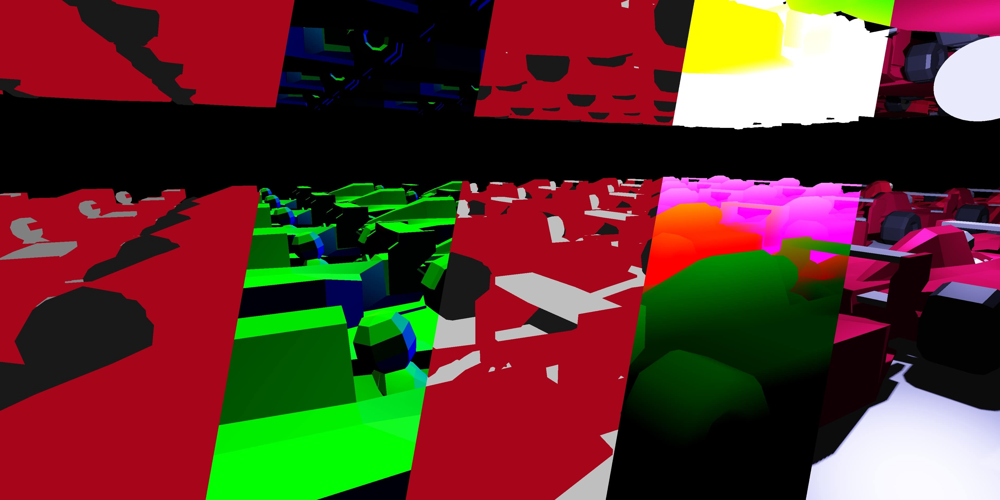
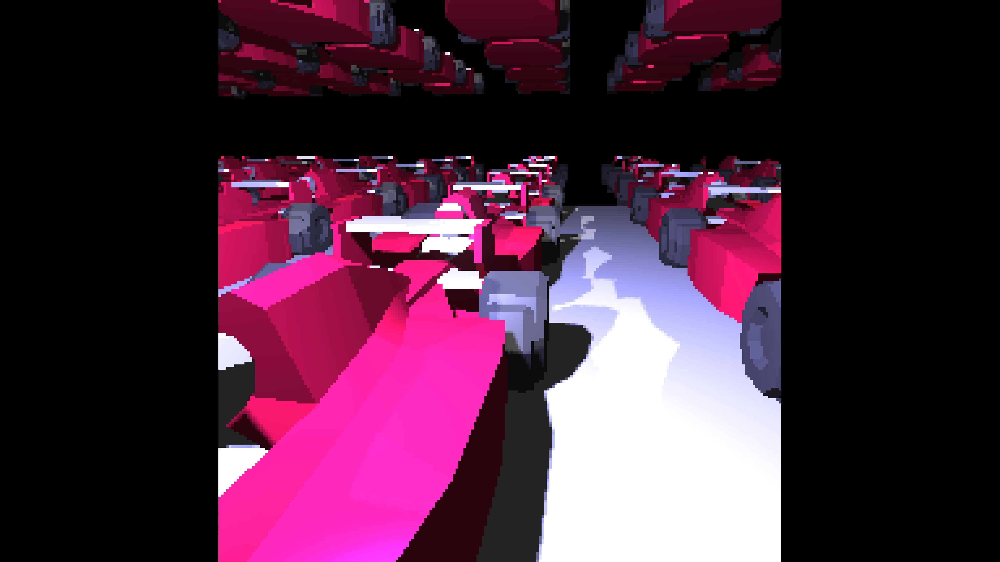
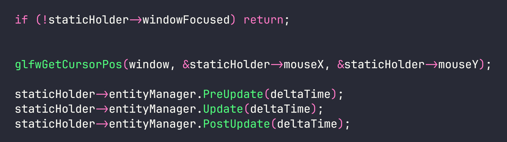

this page is about my
When I came back from holiday, I had a little phase where I didn't really know what to do. Because of that I thought that this is the best time to create some weird illusion game. Popular titles in this genre are Superliminal or Antichamber. I regret choosing UE5 for it because again it crashed after 6 weeks of work and I could never get it running again. So I got angry and decided to create my own engine from scratch. This time I decided against using ECS. Also I read about how deferred shading is sometimes faster than forward shading so I gave it a go using OpenGL.
As for more technical side of engine it uses OpenGL, which seems to do the job for now. Futurewise I
might move to Vulkan due to better performance. I use
deferred shading,
that makes it faster than forward shading for scenes with many objects. For lighting model I use
phong lighting model. Post processing is also included in the engine, right now it's just bloom
effect. Frustum culling for cameras and lighting render passes made using radar approach(see lighthouse3d tutorial).

Let's divide this into steps:
First of all we create a window here. I created a window option struct holding the basic window info including resolution, type or title. We then use this info to create the window. As for type I have 3 popular options: fullscreen, windowed and borderless. I then use this info later when creating camera which also has built-in enum for handling aspect ratios. It includes black bars, strech, expand or keep resolution.
After creating window I get the path where asset folder is. Using it I load textures, shaders or models depending on the necessity. Then I invoke Init function for all entities and components.
Update function is fairly simple. First I check whether update should even be performed depending on focusness of current window. Then I store mouse position and I run 3 calls PreUpdate, Update and PostUpdate. This helps me control the order of updates.
Rendering is the most complex part of engine so I will tell it in a nutshell. Here as I already mentioned I use Deferred Rendering. At the start I clear the color and depth buffers. I get lightspace matrix from directional light and I set uniforms with it.
Then I render shadow maps from all lights and pass the light data to my storage buffer. This data has positions, directions, colors and more.
Here comes the main color pass. I render from each camera, the result is stored in cameras FBO. I get the main camera and I blit it to window, here things like black bars do they work by applying offset where the FBO is blit. And that's it. The deferred rendering part is already done in camera where it merges all of textures into one final.
As for cleanup I simply destroy all entities and components. I need to do this manually because I don't use smart pointers.